Recorre el circuito enoturístico que custodia la génesis del vino uruguayo. Una experiencia que entrelaza la epopeya de Pascual Harriague, 4 bodegas de excepción, viñedos en suelos basálticos y el bienestar de las aguas termales de Salto.
Don Pascual Harriague y la Cepa que Conquistó el Mundo
En el último tercio del siglo XIX, el inmigrante vasco-francés Don Pascual Harriague transformó la geografía productiva de Salto. Tras minuciosos ensayos con cepas traídas de los Pirineos, logró aclimatar en el suelo basáltico y el clima subtropical salteño la uva Tannat (entonces denominada Harriague).
Hoy, el Espacio Cultural Bodega Harriague (Punto Cero) y el proyecto internacional U-riharri rescatan las murallas de piedra del antiguo saladero y bodega de La Caballada, convirtiendo a Salto en un polo de turismo cultural, vitivinícola y gastronómico de relieve internacional.
1874Primera cosecha documentada
4Estaciones enoturísticas
30+Medallas de Oro y Plata
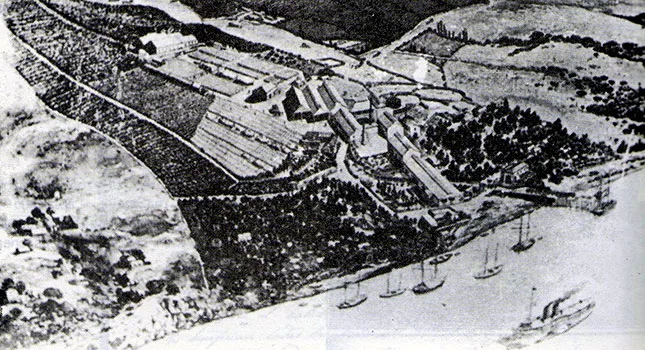
Archivo Histórico Municipal
Ruinas de Bodega Harriague · Salto, Uruguay
Itinerario Oficial
Las 4 Estaciones de la Ruta
Cada parada representa un capítulo vivo: desde el rescate patrimonial en el casco histórico hasta viñedos boutique con tecnología de vanguardia sobre las costas del Río Uruguay y Parada Daymán.
Estación 01
Punto Cero del Tannat
Espacio Cultural Bodega Harriague
Recinto arqueológico e industrial. Cuna donde se implantaron los primeros cuadros de Tannat en 1874. Proyecto patrimonial U-riharri.
Av. Harriague y Etcheverry
Ver Ficha →
Estación 02
Ribera del Río Uruguay
Bodega Salto Chico
Viñedos sobre cascadas basálticas. 6 hectáreas de cepas europeas y moderna tecnología de vinificación artesanal.
Colonia Osimani, Salto
Ver Ficha →
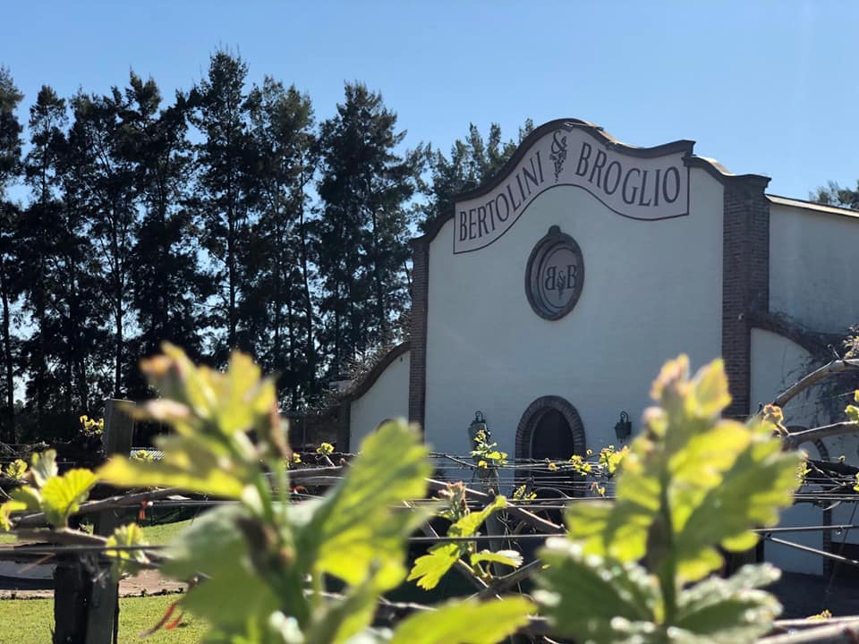
Estación 03
Bodega Boutique & Terroir
Bodega Bertolini & Broglio
19 hectáreas de viñedos conducidos en parrales. Pioneros en vinificación por gravedad y creadores del premiado Tannat Exotic.
Ruta 3 Km 468.5, Daymán
Ver Ficha →
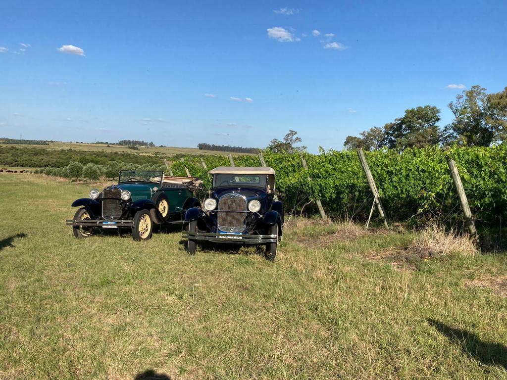
Estación 04
Viñedo El Asombrado
Mori Maglio Wines
Tradición vitivinícola viva en Parada Daymán. Vinos de autor con identidad territorial y maridajes gourmet de cordero y cítricos salteños.
Parada Daymán, Salto
Ver Ficha →
El Ciclo del Tannat
¿Cuándo Vivir la Experiencia?
Cada estación del año transforma el paisaje de Salto y revela una faceta única de la uva, la vendimia y las cavas.
📍 Es Ahora
Dic — Mar · Verano
Temporada de Vendimia
El momento cumbre del año: cosecha manual al amanecer, degustación de uvas directas del racimo, visitas crepusculares y pisada tradicional en lagares.
Cosecha en vivo & pisada de uvas
Mes del Tannat
📍 Es Ahora
Abr — May · Otoño
Semana de Harriague
14 de Abril: Día Nacional del Tannat en homenaje al natalicio de Don Pascual Harriague. Viñedos en tonos dorados, festivales vascos y cata de varietales jóvenes.
Día del Tannat & Festivales
📍 Es Ahora
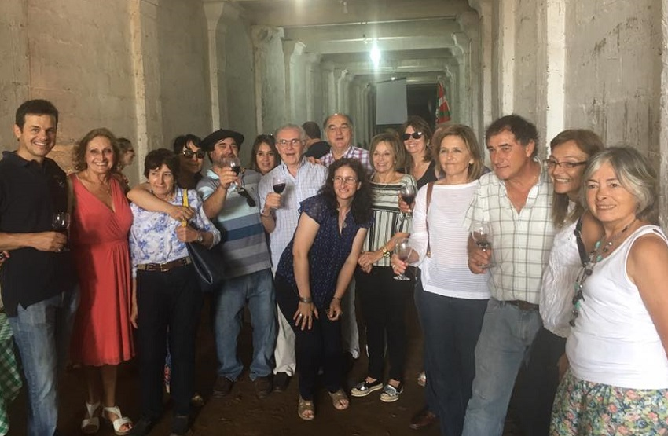
Jun — Ago · Invierno
Poda, Cavas & Fogones
Cata de vinos Gran Reserva y tintos de guarda junto a la chimenea en bodegas boutique, con maridajes de cordero salteño al asador y guisados criollos.
Maridajes de cordero & Cavas
📍 Es Ahora
Sep — Nov · Primavera
Brotación & Envero
Renacimiento del viñedo con el brote de los primeros pámpanos. Clima templado ideal para paseos en bicicleta costaneros, picnics campestres y copas de vino al aire libre.
Picnics enoturísticos & Bicicleta
Fotografías cedidas para este proyecto por INAVI (cosecha de vendimia) y Bodegas del Uruguay (Semana de Harriague).
Cómo Llegar y Cuánto Quedarte
Salto está más cerca de lo que pensás, y el circuito se adapta al tiempo que tengas disponible.
Por la Ruta 3
Unos 490 km desde Montevideo por la Ruta 3 "Gral. José Gervasio Artigas", el corredor que une la capital con todo el litoral norte.
Ver más →
En Avión
El Aeropuerto Nueva Hespérides (STY) tiene vuelos directos a Montevideo con Paranair — la opción más rápida si venís desde más lejos.
Ver más →
Duración Recomendada
Desde una escapada de medio día (4 horas) hasta el circuito completo de jornada entera por las 4 estaciones con pase termal — ver Paquetes más abajo.
Ver más →
Enoturismo & Bienestar Termal
Vino & Aguas Termales: La Alianza Salteña de Bienestar
Salto tiene un privilegio geográfico único en el Cono Sur: es la cuna del Tannat y, al mismo tiempo, la capital termal del Uruguay, alimentada por las aguas del Acuífero Guaraní. Después de recorrer las bodegas, el circuito se completa naturalmente con un baño termal.
Termas del Daymán (A 5 min de las Cavas)
Aguas hipertermales de hasta 44°C con propiedades relajantes, a minutos de Bertolini & Broglio y Mori Maglio Wines. El complejo termal más visitado de Salto, con piscinas para toda la familia.
Termas del Arapey
El complejo termal más antiguo del país, a unos 80 km de la ciudad sobre el río Arapey Grande. Ideal para quienes quieren extender la estadía un día más después del circuito.
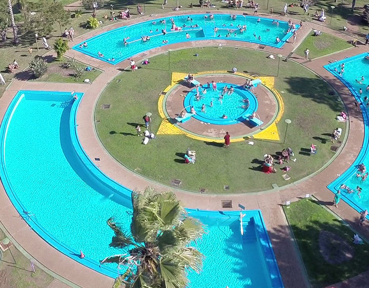
Termas del Daymán
A pocos minutos de las bodegas del circuito
Planificá tu Estadía
Dónde Alojarse
Tres zonas reales para armar tu base, según cuánto quieras alejarte del circuito y si buscás piscinas termales propias.
A 0 km · Punto de Partida
Centro de Salto
Hoteles urbanos clásicos, ideales para moverse desde el centro. Entre las opciones conocidas: Gran Hotel Uruguay, Hotel Español y Hotel Eldorado.
La zona termal de mayor escala, sobre el río Arapey Grande. Resorts como Arapey Thermal Resort & Spa y Altos del Arapey, ideales para sumar un día de descanso después del circuito.
Alojamientos mencionados a modo informativo; no son partners comerciales de este proyecto. Coordiná tu reserva directamente con cada establecimiento.
Experiencias Curadas
Paquetes & Visitas Guiadas
Diseñados por técnicos en turismo con traslados inclusivos, degustación guiada por sommeliers y acceso prioritario.
Medio Día · 4 Horas
Vinos e Historias
USD 45por persona
Ideal para quienes desean sumergirse en la historia de Don Pascual Harriague y disfrutar de una cata guiada junto a la costa del río.
Visita guiada a Bodega Harriague (Punto Cero)
Recorrido y cata de 3 varietales en Bodega Salto Chico
Tabla de quesos artesanales y panes de campo
Traslado en van ejecutiva desde centro o termas
Recomendado · Más Completo
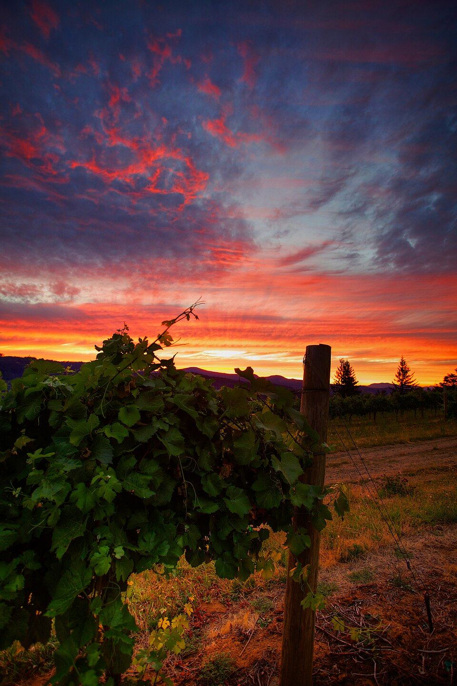
Día Completo · 8 Horas
El Legado del Tannat
USD 95por persona
Circuito integral por las 4 estaciones de la Ruta, con almuerzo maridaje de 4 pasos, cata de vinos premiados y pase termal de cortesía.
Paseo completo por las 4 estaciones del circuito
Almuerzo maridaje en bodega: Cordero y Tannat
Cata técnica de 6 vinos Gran Reserva y premiados
Entrada relax a Termas del Daymán / San Nicanor
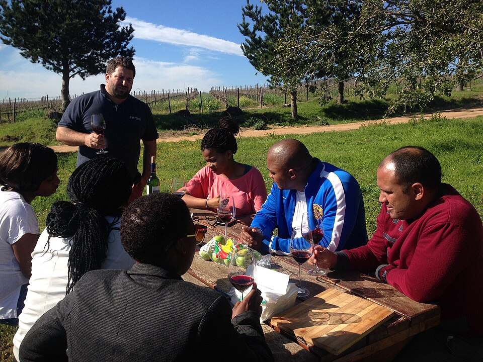
Grupos & Eventos · A Medida
Experiencia Grupal & Corporativa
Cotización a medidasegún cantidad de personas
Pensado para grupos de 10 o más personas, eventos corporativos, despedidas y celebraciones. Armamos el itinerario, el menú y los traslados según el tamaño y el perfil del grupo.
Itinerario flexible entre las 4 estaciones del circuito
Deslizá hacia el costado para ver las 3 columnas →
Característica
Vinos e Historias
El Legado del Tannat
Experiencia Grupal & Corporativa
Duración
4 horas
8 horas
A medida
Bodegas incluidas
2 bodegas
Las 4 estaciones
A medida
Almuerzo maridaje
—
Cordero y Tannat (4 pasos)
Personalizable
Acceso termal
—
Daymán / San Nicanor
A coordinar
Traslado incluido
Sí
Sí
Sí, vehículo de mayor capacidad
Ideal para
Parejas o tiempo limitado
La experiencia completa
Grupos de 10+, empresas, eventos
Fotografías ilustrativas bajo licencia Creative Commons (Wikimedia Commons) — no corresponden a las bodegas de Salto retratadas en este circuito. Crédito: Dennis G. Jarvis, Zach Dischner y Liezenorval.
Pagos Internacionales
Pagá tu Experiencia desde Cualquier Parte del Mundo
Un sistema de pago propio, pensado para el visitante internacional: tarjetas, billeteras digitales y la moneda que prefieras.
Aceptamos las principales tarjetas y billeteras digitales del mundo
Cotizá y reservá tu experiencia en tu propia moneda
Conexión cifrada de extremo a extremo en cada paso
Confirmación inmediata de tu solicitud de reserva
Monedas aceptadas
USDUYUEURARSBRL
Cifrado SSL 256-bit
Pago Protegido
Pasarela de pago ilustrativa, desarrollada como parte del proyecto académico. La confirmación final de cada reserva se coordina de forma directa por WhatsApp.
TannatPay
•••• •••• •••• 1874
TitularLa Ruta del Tannat
Válida hasta12/29
Métodos de pago aceptados
VISA
AMEX
PayPal
Pay
Google Pay
Confianza & Respaldo
Voces del Circuito
Un proyecto recién nacido, pero respaldado por instituciones con historia. Así lo sostenemos hoy.
Guías Certificados
Formados en la Tecnicatura en Diseño de Itinerarios Turísticos Sostenibles de UTU (DGETP), en el mismo Polo Educativo Tecnológico Salto que sostiene este proyecto.
Viticultura Certificada
Bodegas alineadas al Programa de Viticultura Sostenible de INAVI, auditado por LSQA, bajo el sello "Uruguay Sustainable Winegrowing".
Patrimonio Respaldado
El rescate de Bodega Harriague cuenta con el acompañamiento de la Comisión Honoraria del Patrimonio Histórico de Salto y la Universidad del País Vasco.
¿Ya hiciste el circuito?
Este proyecto está dando sus primeros pasos. Contanos cómo fue tu experiencia y ayudanos a construir, con casos reales, esta sección.
Nuestra misión es acercar a cada visitante a la cuna del Tannat a través de un circuito auténtico y de cercanía. Nuestra visión es que Salto se consolide como referente del enoturismo sostenible en el litoral norte, sin perder la identidad que lo hizo posible.
Turismo Comunitario & Local
Fomentamos el empleo de guías egresados de UTU, productores artesanales y transportistas locales de Salto, para que cada visita genere desarrollo económico real dentro de la propia comunidad.
Los guías del circuito se forman en la Tecnicatura en Diseño de Itinerarios Turísticos Sostenibles de la propia UTU (DGETP), que capacita por niveles —Guía Turístico Básico, Técnico en Itinerarios Turísticos y Tecnólogo— dentro del mismo Polo Educativo Tecnológico Salto que sostiene este proyecto.
Más información
Viticultura Sostenible
Prácticas de bajo impacto ambiental, cuidado del agua del Acuífero Guaraní y protección del suelo basáltico, para que la tierra que le dio identidad al Tannat siga produciendo por generaciones.
A nivel nacional, INAVI impulsa el Programa de Viticultura Sostenible: una certificación voluntaria auditada por LSQA y alineada con la OIV. Los viñedos certificados reciben el sello "Uruguay Sustainable Winegrowing" — en 2023 ya sumaba 162 viñedos, el 31% de la superficie vitícola del país.
Más información
Rescate Patrimonial
Compromiso activo en la conservación de las ruinas de Bodega Harriague junto a la Intendencia y la Universidad del País Vasco, manteniendo viva la historia de Pascual Harriague para quienes recién la están descubriendo.
El rescate cuenta con el respaldo de la Comisión Honoraria del Patrimonio Histórico de Salto, que puso en valor el sitio y la figura de Harriague desde la década de 1980, y con la participación de la Comisión del Patrimonio Cultural de la Nación en el proyecto de recuperación — además del acompañamiento internacional de la Universidad del País Vasco a través de U-riharri.
Más información
Postales del Circuito
Galería
Imágenes reales de las bodegas, los viñedos y las termas que forman parte del circuito.
Viñedo uruguayo al amanecer
Fachada de Bertolini & Broglio
Archivo histórico · La Caballada
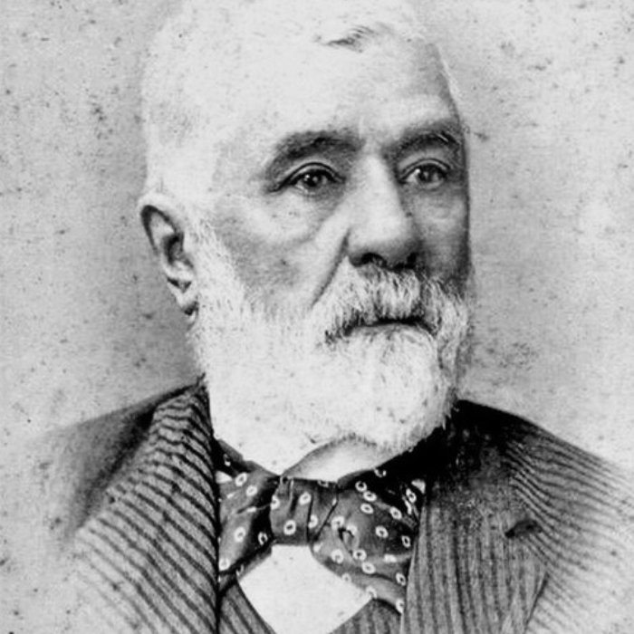
Pascual Harriague · pionero del Tannat
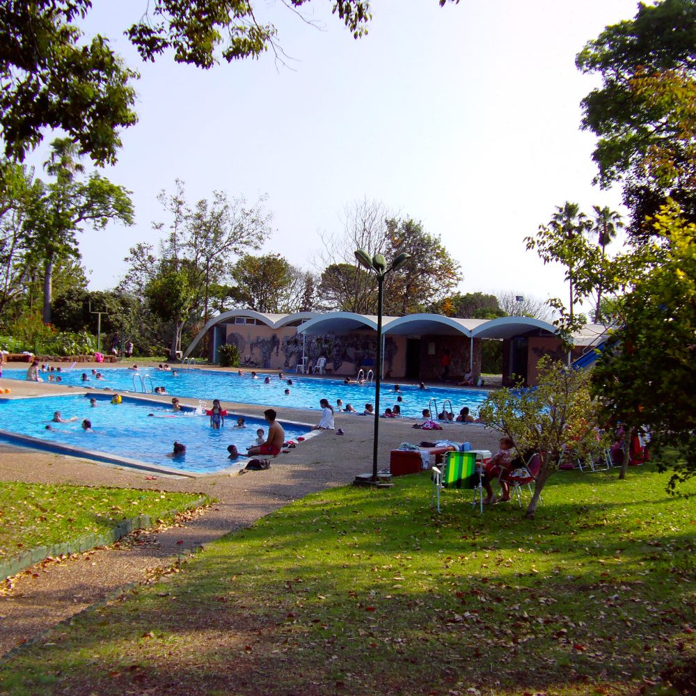
Piscinas termales del Arapey
Viñedo uruguayo al amanecer
Fachada de Bertolini & Broglio
Archivo histórico · La Caballada
Pascual Harriague · pionero del Tannat
Piscinas termales del Arapey
Bodega Harriague · Punto Cero del Tannat
Viñedo El Asombrado · Mori Maglio
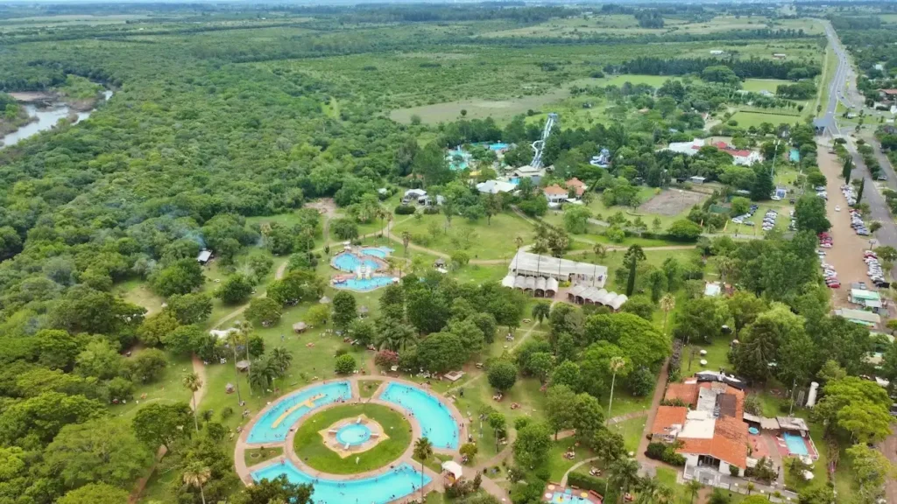
Vista aérea de Termas del Daymán
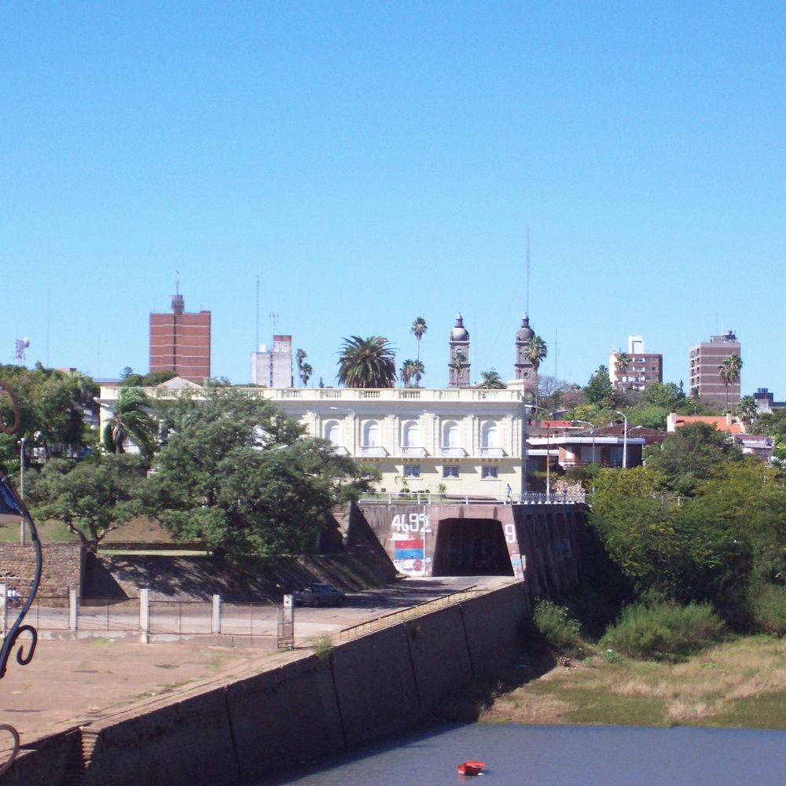
Salto vista desde el puerto
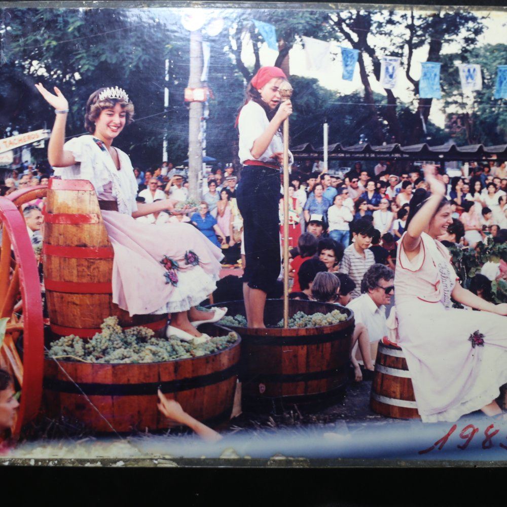
Fiesta de la Vendimia, 1985
Bodega Harriague · Punto Cero del Tannat
Viñedo El Asombrado · Mori Maglio
Vista aérea de Termas del Daymán
Salto vista desde el puerto
Fiesta de la Vendimia, 1985
Viñas y Bodega del Salto Chico
Brindis en las cavas históricas
Piscinas termales del Daymán
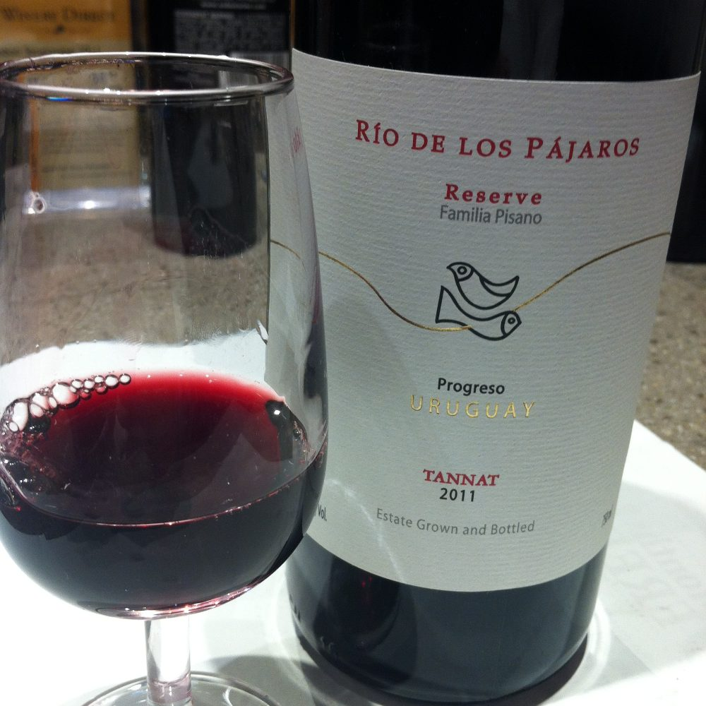
Una copa de Tannat uruguayo
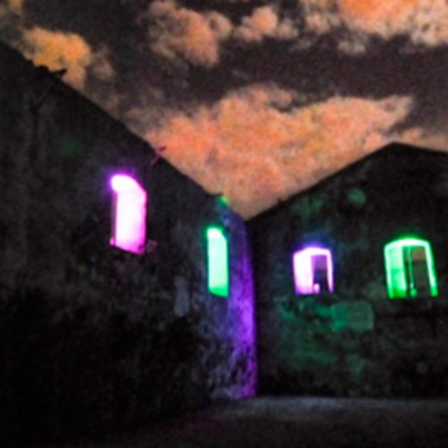
Noche de luces en las ruinas de Harriague
Viñas y Bodega del Salto Chico
Brindis en las cavas históricas
Piscinas termales del Daymán
Una copa de Tannat uruguayo
Noche de luces en las ruinas de Harriague
Fotografías: archivo propio del proyecto e INAVI · Wikimedia Commons — Alejgon (Termas del Arapey, CC BY-SA 4.0), colaboradores de Wikimedia (Salto desde el puerto y Fiesta de la Vendimia 1985, CC BY-SA/GFDL; copa de Tannat uruguayo, CC BY-SA), INAVI (retrato de Pascual Harriague, dominio público; foto de la Semana de Harriague, cedida por Bodegas del Uruguay).
Geolocalización
Mapa del Circuito Enoturístico
Haz clic en los puntos del mapa para ubicar cada estación a lo largo de Salto y la Ruta 3 hacia Parada Daymán.
Todo lo que necesitas saber antes de iniciar tu recorrido por la cuna del Tannat.
Todas nuestras experiencias continúan normalmente. Las visitas a viñedos se adaptan hacia las cavas históricas subterráneas, salas de barricas y salones de cata climatizados para garantizar su confort y seguridad.
Sí. Los paquetes incluyen servicio de recogida y regreso tanto en hoteles del centro de la ciudad de Salto como en la zona termal de Daymán y Arapey (previa coordinación al momento de la reserva).
Por supuesto. Disponemos de jugos de uva 100% naturales artesanales, aguas saborizadas con cítricos de Salto y opciones gastronómicas especiales para menores y personas abstemias, manteniendo la tarifa preferencial de acompañante.
Recomendamos ropa cómoda, sombrero o gorro para el sol y calzado cerrado y bajo para caminar con total tranquilidad por los senderos de viñedos y las áreas de suelo basáltico.
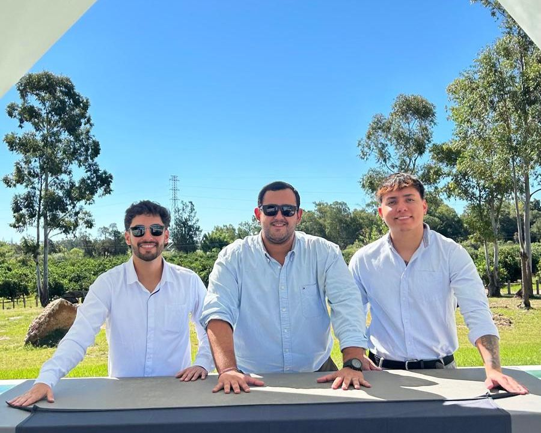
Federico · Homero · Anthony
Estudiantes de la Tecnicatura en Diseño de Itinerarios Turísticos Sostenibles
El Equipo
Quiénes Sostienen este Proyecto
La Ruta del Tannat nace como proyecto de egreso de tres estudiantes de la Tecnicatura en Diseño de Itinerarios Turísticos Sostenibles del Polo Educativo Tecnológico Salto (DGETP-UTU): Federico Camara, Homero Texeira y Anthony Moreira.
Durante su formación relevaron de primera mano la historia de Pascual Harriague, el estado de las bodegas boutique de Salto y el potencial del circuito enoturístico junto a las termas del litoral norte — y decidieron convertir ese trabajo académico en una herramienta real para dar a conocer el departamento.
Federico CamaraHomero TexeiraAnthony Moreira
Desde SaltoUSD 45 / persona
Paso Directo · WhatsApp Salto
Solicitar Reserva de Circuito
Completa tus datos y te coordinaremos el itinerario inmediatamente.